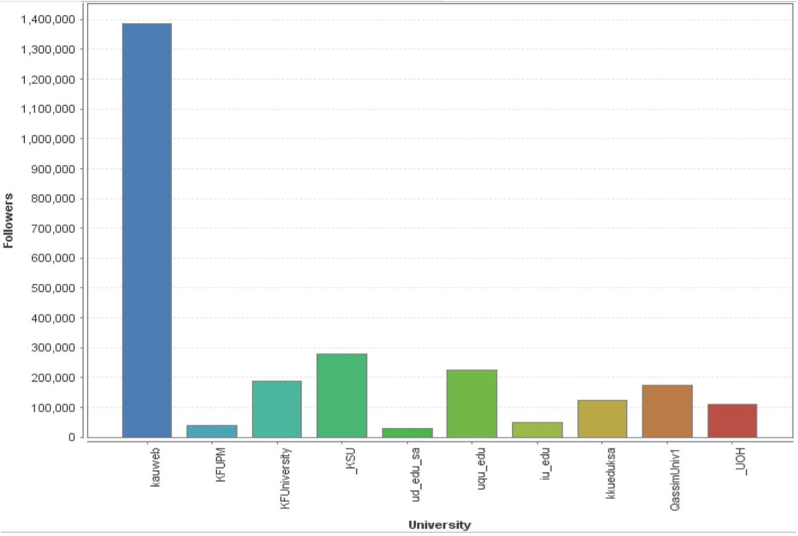
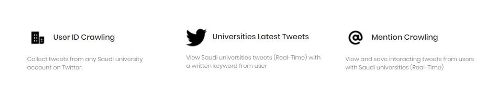
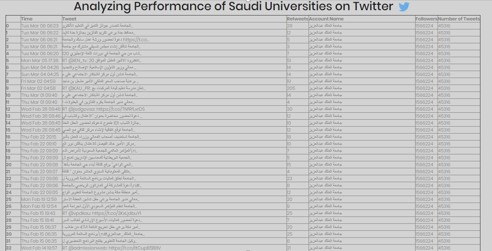

Analyzing Performance of Saudi Universities on Twitter
Project Members
- - Ali Almalki
- - Amjad Dahlawi
Project Overview
The issue of analyzing tweets related to universities is very significant subject. There is so much data on Twitter that needs to be understood by analyzing the data and get useful information's from it. Therefore, we intend in our project to enable the user to analyze tweets, searching for common topics or keywords and presenting relationships in graphs. Taking into concern 25 studies related to the subject of our project were summarized and relied upon.
The analysis has been conducted on data related to Saudi universities accounts on Twitter and their follower's number, number of retweets from each of the ten universities and the frequent tweeting times of the ten universities. Afterward, it was concluded from the analysis that the users of Twitter and especially users who are interested in educational purposes with their universities on Twitter.
Problem Statement
There is a difficulty in knowing the status of universities, academic level and universities ranking in different fields and because the great use of Twitter by universities leads to the importance of analysis of this use to extract useful information in this regard. The project analyse student's tweets with their universities and extract useful information from it, also to determine the ranking of the best Saudi universities and the most interactive universities with their Twitter accounts.
Tools
- • Python for programming.
- • Bokeh library for visualisation.
- • Flask.
- • Mongo DB.
- • Redis Server.
- • Celery for backend services.
- • Robo 3T.
Screenshots of some Analysis


Screenshots of our Web App Interface


Project Report
View Project Report in PDF Format